I used course images, Proj 0 photos, and Proj 1 cathedral.
I first filtered my grayscale selfie with a 9×9 box filter and Dₓ/Dᵧ. Both NumPy convolutions flip the filter and use zero padding. On an 80×80 crop, four loops took 0.1573 s, two loops 0.0160 s, and SciPy 0.0009 s (both matched SciPy). Note that zero padding darkens the borders.
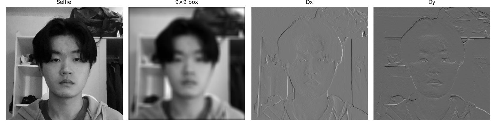
Convolution code:
padded, flipped = pad_and_flip(image, kernel)
for y in range(image.shape[0]):
for x in range(image.shape[1]):
for j in range(kernel.shape[0]):
for i in range(kernel.shape[1]):
result[y, x] += padded[y + j, x + i] * flipped[j, i]
for y in range(image.shape[0]):
for x in range(image.shape[1]):
result[y, x] = np.sum(padded[y:y + h, x:x + w] * flipped)pad_and_flip uses np.pad and kernel[::-1, ::-1].
For cameraman, I used Dₓ = [1, −1], its transpose, and magnitude √(Dₓ² + Dᵧ²). I chose threshold 0.15 to keep the main edges while accepting some grass texture.
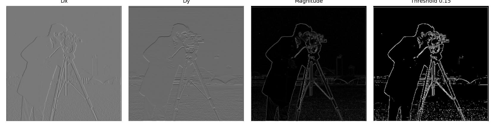
I built a Gaussian with cv2.getGaussianKernel (σ = 2). Smoothing removes many grass edges, and then convolving the Gaussian with Dₓ/Dᵧ gives DoG filters, whose interior results match the two-step method within 1.4×10⁻¹⁵. After smoothing, I used threshold 0.08.
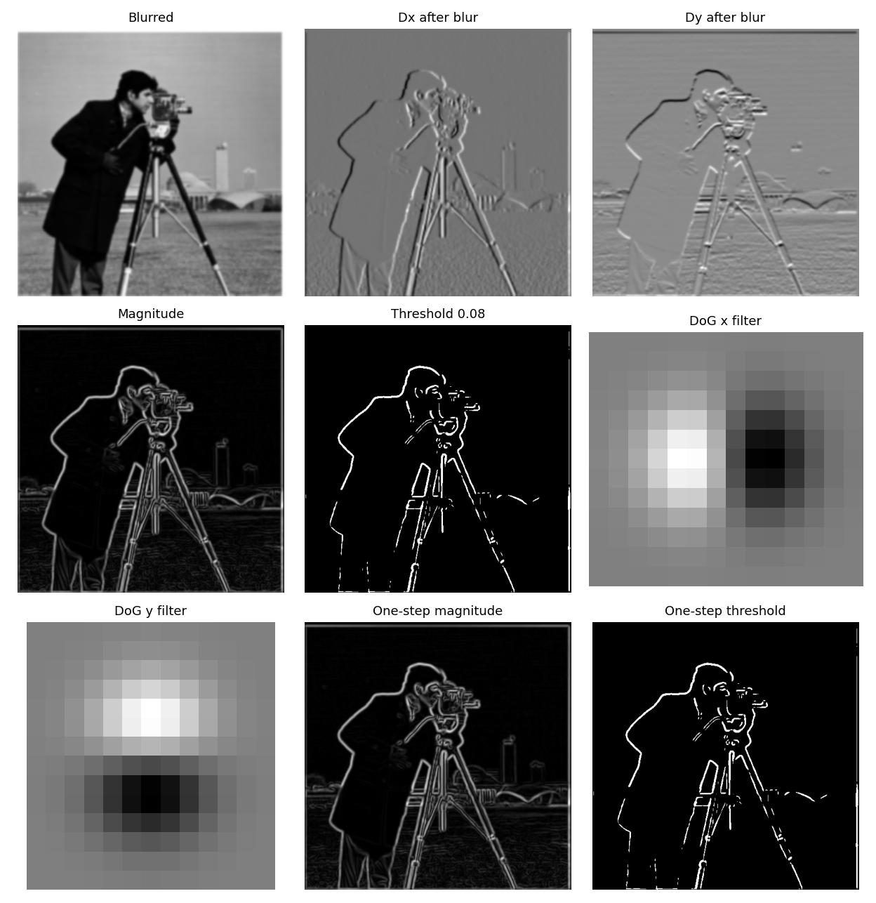
High frequencies are the original minus its Gaussian blur, so I added them back with amount α = 1.5. The single unsharp-mask filter is (1 + α)δ − αG.
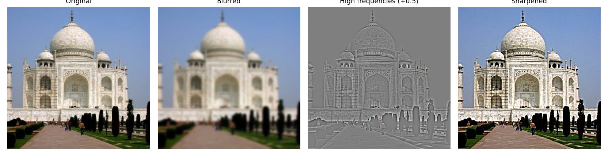
Larger amounts strengthen edges and noise, whereas sharpening a blurred cathedral restores contrast but not the details.
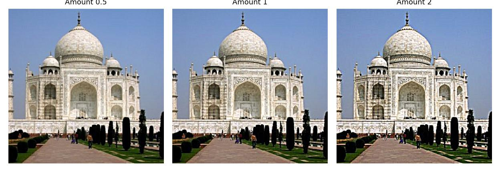
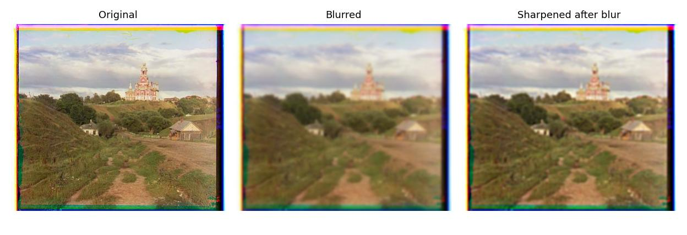
I aligned each pair with two points, then added one low-pass image to another's high frequencies. Low/high σ values: Nutmeg-Derek 3/2, distant-close selfie 9/5, wide-zoomed building 10/5. I chose 3/2 so Nutmeg shows from afar and Derek's details show up close. The Derek-Nutmeg figures show alignment, filtering, and Fourier log magnitudes.
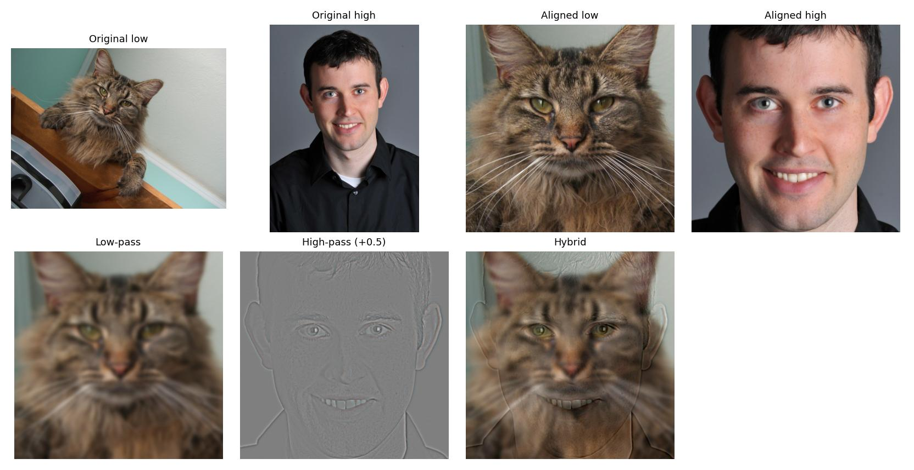
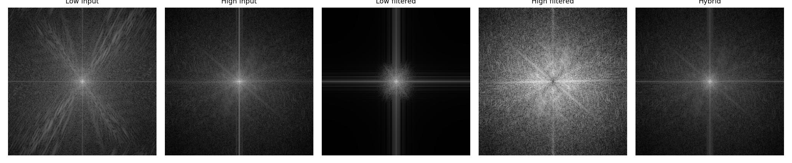
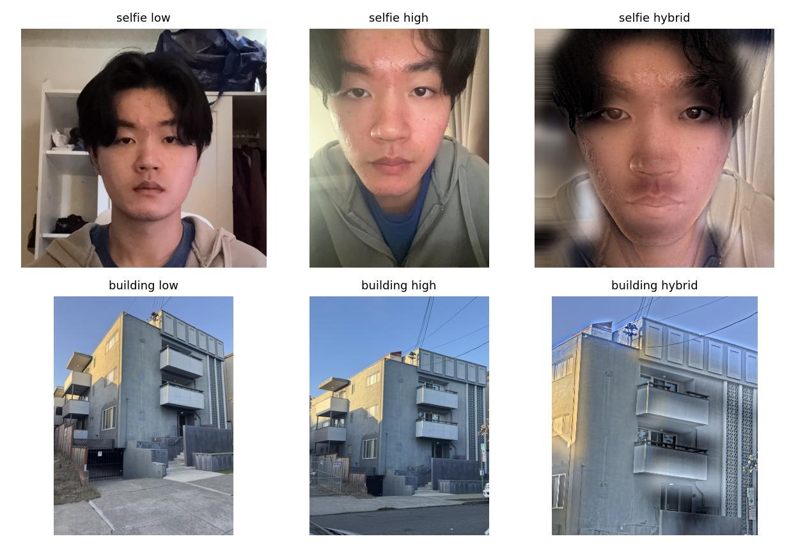
The building hybrid is pretty subtle since both inputs show the same building.
Gaussian stacks blur without downsampling, whereas laplacian stacks store differences and the final blur, so their levels sum to the original.
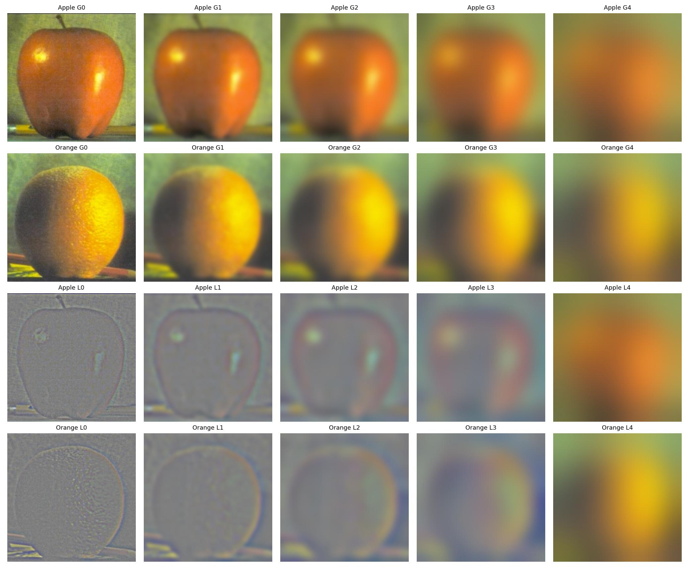
I weight each Laplacian level by its Gaussian-blurred mask and sum the levels.
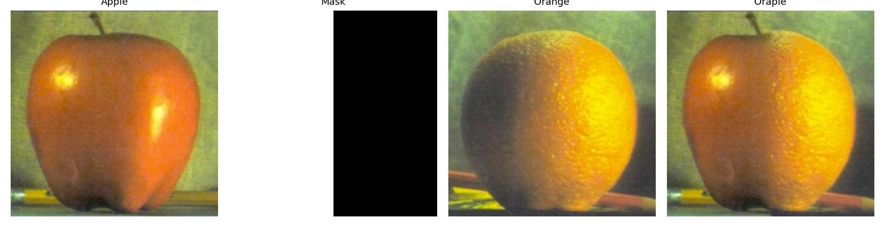
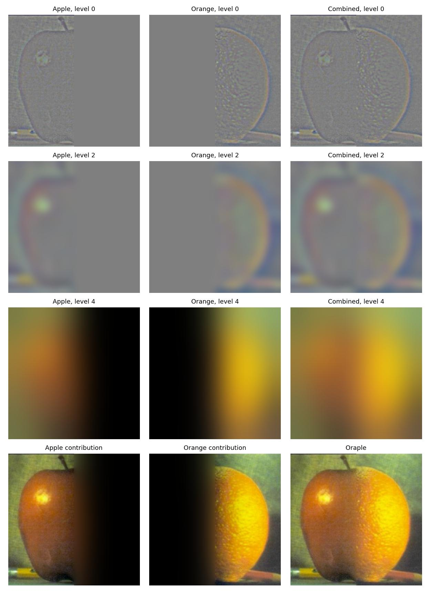
My custom blends join two cactus views at a vertical seam and two selfies with an oval face mask.
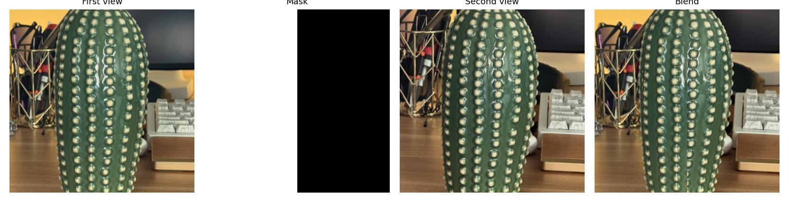
Masked inputs and Laplacian contributions for the selfie blend:
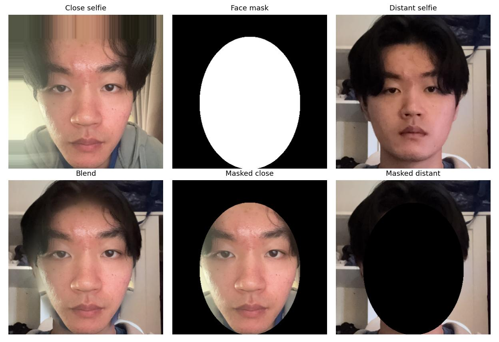
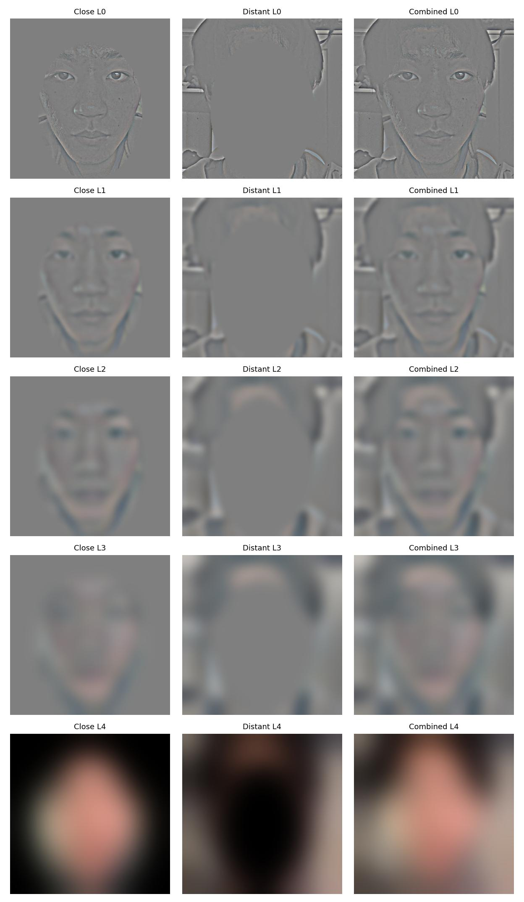
Gaussian blur separates image frequencies, whereas blurring a mask across scales smooths a blend's seam.